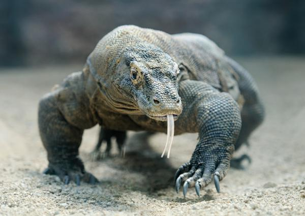

Camaleon

Dragón de Komodo

Los reptiles son animales vertebrados cuya principal característica es la presencia de escamas en la piel y el hecho de ser de sangre fría, por lo que no pueden conservar su temperatura corporal. En este caso, sin embargo, a diferencia de los anfibios, los reptiles tienden a permanecer en el sol. Son uno de los grupos de animales más antiguos de la Tierra (en su día llegaron a dominarla) y tenemos: serpientes, tortugas, cocodrilos, iguanas, camaleones, lagartijas y demás.
La respiración de los reptiles, además, es siempre a través de pulmones. Incluso los cocodrilos, las tortugas marinas y otros reptiles acuáticos respiran mediante estos órganos. Estos tienen una capacidad pulmonar muy elevada y reducen su metabolismo para aguantar mucho tiempo bajo el agua sin respirar. Fruto de este lento metabolismo, es común que los reptiles, pese a cazar de forma feroz y ser depredadores muy eficientes, necesitan un largo período de descanso después de haber comido, pues la digestión les toma mucho tiempo.
Los reptiles tienen una reproducción similar a la de las aves y los anfibios, pues la fecundación ocurre en el interior de la hembra pero esta pone los huevos en el exterior, donde se desarrollarán los individuos. La mayor parte de los reptiles son carnívoros y presentan un sistema digestivo sencillo para sus alimentos. Muchos reptiles, además, son los únicos animales que han desarrollado glándulas venenosas en su dentadura. Ejemplo de ello son muchas serpientes y los dragones de Komodo.